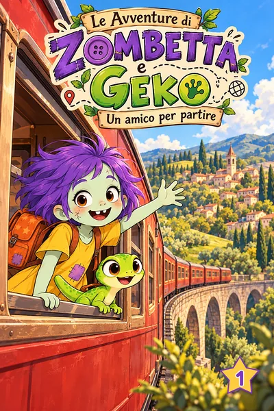

Volume 1 · Borgoquieto
Un amico per partire
Nella soffitta di una casetta un po' storta, Zombetta trova uno zaino arancione… e dentro c'è Geko, un geco parlante sempre affamato. Insieme salgono sul treno sbagliato e partono per vedere il mondo.
Acquista su Amazon →